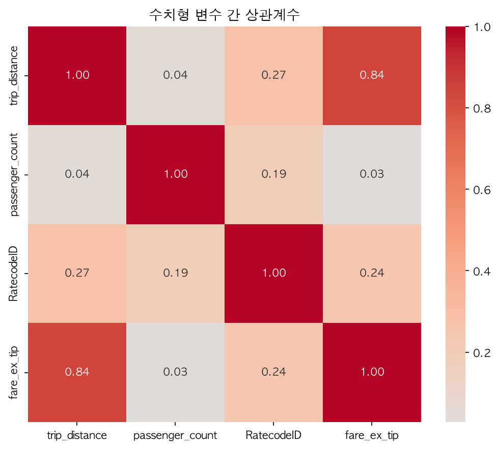
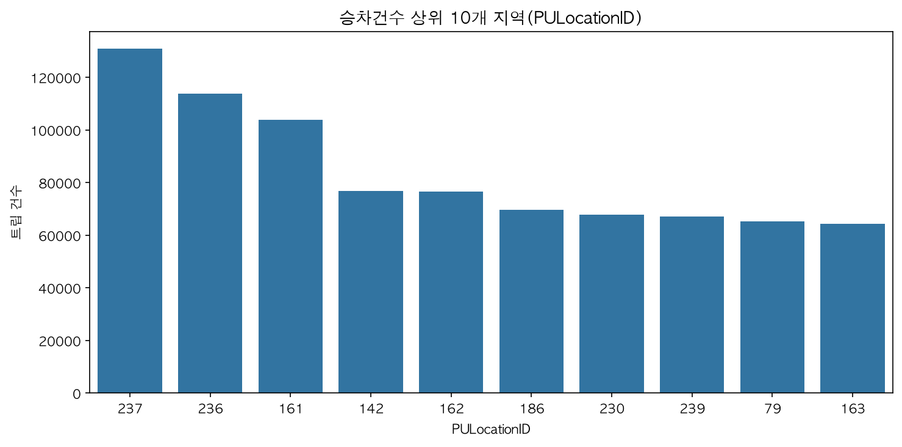
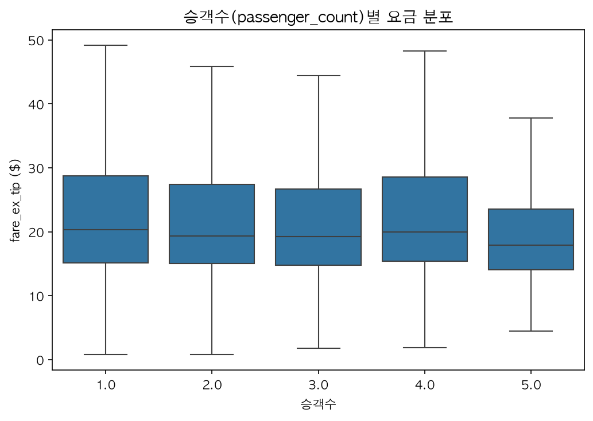
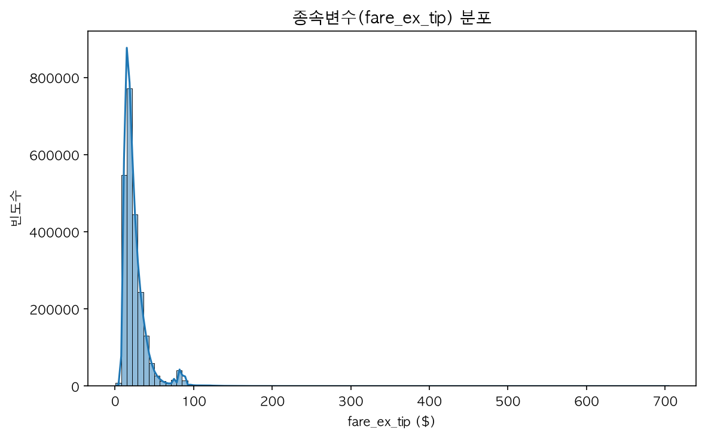
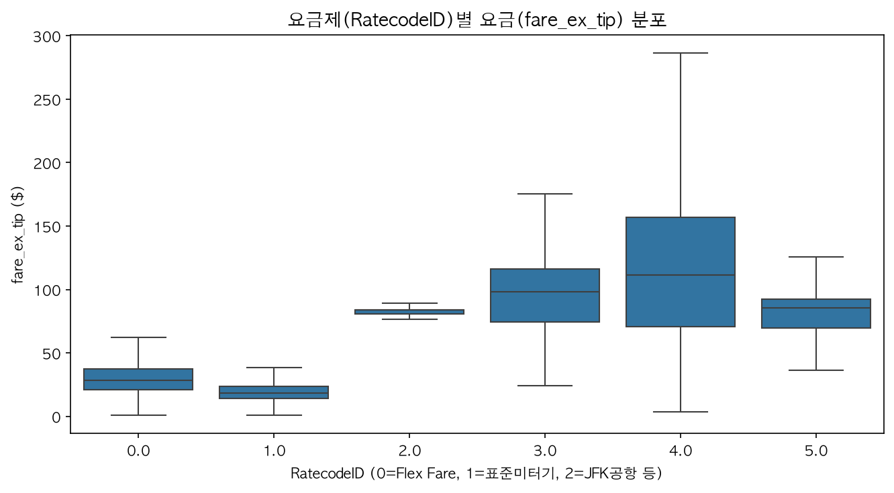
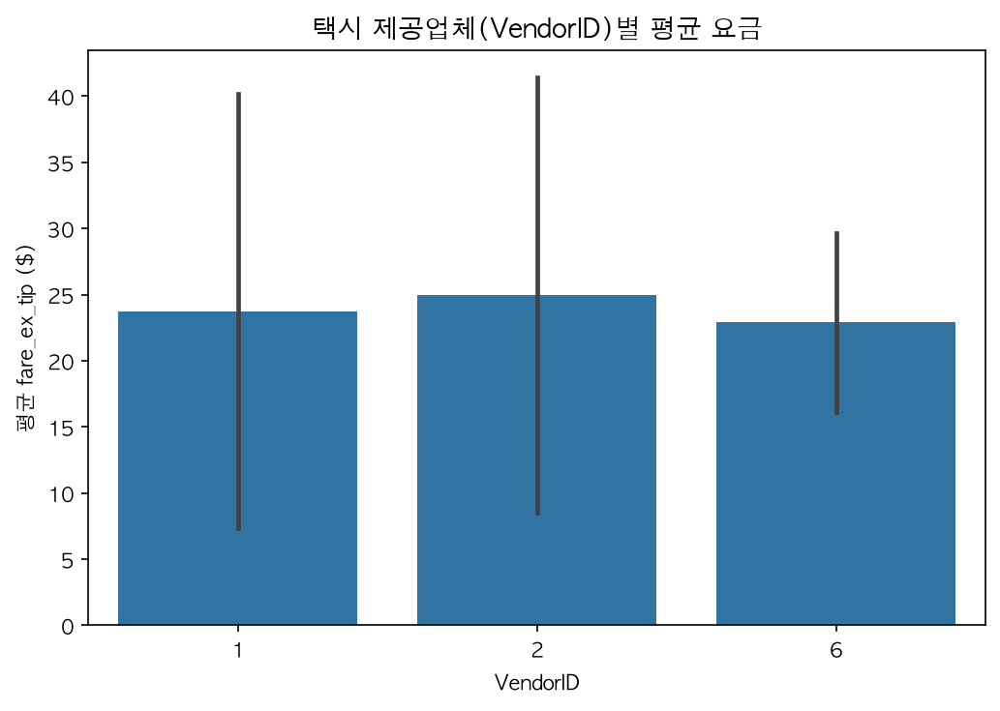
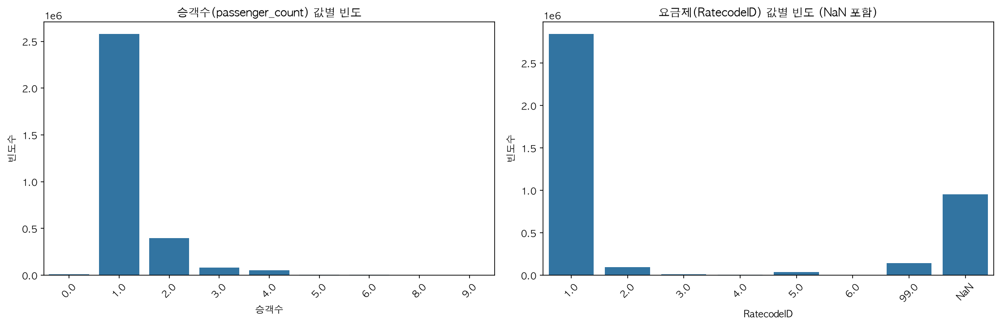
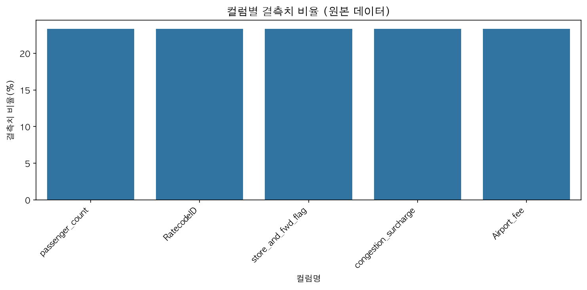
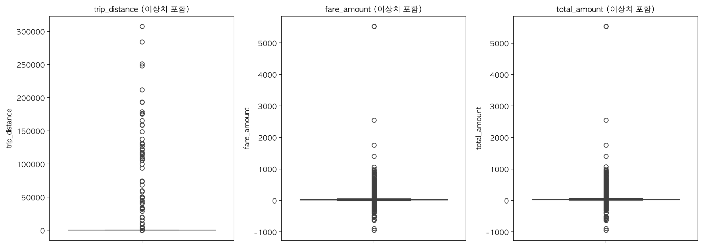

NYC Yellow Taxi 요금 예측 분석 리포트
Jinja2 자동 생성 · 2026-08-07 16:28:21
Train 행 수2,337,766
Test 행 수1,140,129
피처 수29
최적 트리 수3,953
원본 데이터 로딩 비교
NYC TLC 원본 Parquet를 두 라이브러리로 각각 전체 로딩해 결과를 검증했습니다.
| 항목 | Pandas 2.3.3 | Polars 1.43.2 |
|---|---|---|
| 로딩 시간(초) | 0.2862 | 0.0637 |
| 행 수 | 4,090,836 | 4,090,836 |
| 열 수 | 20 | 20 |
| 메모리 추정(MB) | 741.48 | 550.13 |
| total_amount 합계 | 124709721.43 | 124709721.43 |
Polars가 약 4.49배 빨랐으며, 행·열·컬럼·합계·기간 비교 결과는 모두 일치했습니다.
모델 성능
| 지표 | 베이스라인 | 최종 모델 |
|---|---|---|
| MAE | 10.4951 | 2.6730 |
| RMSE | 16.2922 | 5.0046 |
| R2 | -0.0012 | 0.9055 |
| MAPE_percent | 49.9389 | 11.2842 |
| p90_absolute_error | 15.8018 | 6.0874 |
| within_5_dollars_percent | 28.1835 | 85.9385 |
변수 중요도 Top 15
| 변수 | Gain | 비중(%) | 그룹 |
|---|---|---|---|
| expected_fare_tow | 564.6725463867188 | 32.43 | 타깃인코딩 |
| rc_route_fare | 266.8794860839844 | 15.33 | 타깃인코딩 |
| RatecodeID | 232.37440490722656 | 13.35 | 원본 |
| expected_fare_med | 136.41009521484375 | 7.83 | 타깃인코딩 |
| same_zone | 55.00164031982422 | 3.16 | 플래그 |
| is_rush_hour | 42.51136016845703 | 2.44 | 플래그 |
| rc_tow_rate | 37.19499206542969 | 2.14 | 타깃인코딩 |
| VendorID | 33.00495529174805 | 1.9 | 원본 |
| pickup_airport | 31.96152687072754 | 1.84 | 플래그 |
| is_weekend | 27.232982635498047 | 1.56 | 플래그 |
| trip_distance | 26.886375427246097 | 1.54 | 원본 |
| is_overnight | 25.136587142944336 | 1.44 | 플래그 |
| dropoff_log_count | 20.917715072631836 | 1.2 | 빈도인코딩 |
| expected_fare_rc | 20.1732234954834 | 1.16 | 타깃인코딩 |
| dropoff_airport | 20.059598922729492 | 1.15 | 플래그 |
요금제별 오차
| ratecode | 건수 | MAE | 평균요금 | 행비중% | 상대오차% | 총오차비중% |
|---|---|---|---|---|---|---|
| 0(flex fare) | 282557 | 4.95 | 28.53 | 24.8 | 17.4 | 45.9 |
| 1(일반) | 814729 | 1.8 | 19.46 | 71.5 | 9.2 | 48.0 |
| 2(JFK 정액) | 29376 | 1.58 | 82.45 | 2.6 | 1.9 | 1.5 |
| 3(Newark) | 3876 | 5.22 | 89.16 | 0.3 | 5.9 | 0.7 |
| 4(Nassau/Westchester) | 2702 | 12.83 | 115.49 | 0.2 | 11.1 | 1.1 |
| 5(협상요금) | 6889 | 12.01 | 80.94 | 0.6 | 14.8 | 2.7 |
시각화






인터랙티브 차트 열기 — visualization_processed_plotly_1.html
인터랙티브 차트 열기 — visualization_processed_plotly_2.html



산출물
- data_loading_comparison.json
- error_by_ratecode.csv
- fare_model_pipeline.joblib
- feature_importance.csv
- metrics.json
- report.html
- statistics.txt
- test_predictions.csv.gz
- visualization_cell_11.png
- visualization_cell_17.png
- visualization_cell_19.png
- visualization_cell_5.png
- visualization_cell_7.png
- visualization_cell_9.png
- visualization_plotly_1.html
- visualization_plotly_2.html
- visualization_processed_cell_11.png
- visualization_processed_cell_17.png
- visualization_processed_cell_19.png
- visualization_processed_cell_5.png
- visualization_processed_cell_7.png
- visualization_processed_cell_9.png
- visualization_processed_plotly_1.html
- visualization_processed_plotly_2.html
- visualization_raw_cell_10.png
- visualization_raw_cell_4.png
- visualization_raw_cell_6.png
- visualization_raw_plotly_1.html
{kind=link}
{kind=link}
{kind=link}
{kind=link}
{kind=link}
{kind=link}
{kind=link}
{kind=link}
{kind=link}
{kind=link}
{kind=link}
{kind=link}
{kind=link}
{kind=link}
{kind=link}